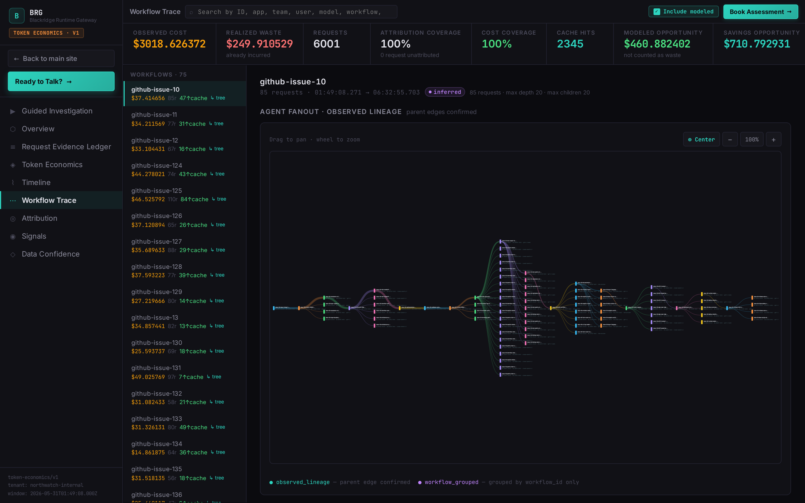
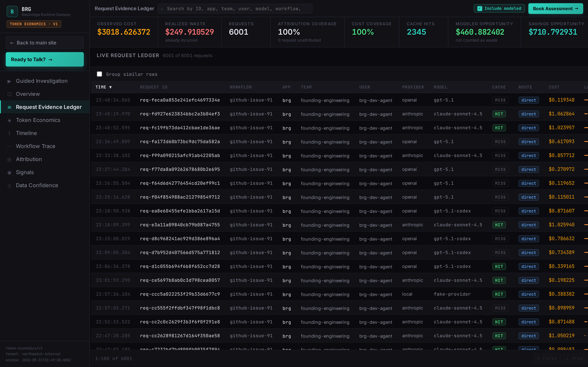

Hotpath forensics
Inference is your fastest-growing cloud bill, and your least inspected live system.
AI Spend Forensics
Find where your AI spend is leaking.
Blackridge sits in the inference hotpath to track token economics as traffic runs, so the business can see which apps, teams, tenants, retries, fallbacks, duplicate requests, and model choices are causing spend.
Start with one expensive workflow and see Blackridge identify live cause patterns: near real-time spend movement, attribution coverage, waste findings, recommended tests, and supporting request-level evidence.
6,001 requestsBlackridge evidence
647.7M tokensReconstructed economics
75 workflowsCause-level attribution
Reconstructs spend from
OpenAI
Anthropic
Gemini
Azure OpenAI
AWS Bedrock
Self-hosted
Product evidence
The screens answer painful spend questions.
Blackridge correlates live inference traffic into workflows, individual requests, and evidence rows. The point is not another dashboard. The point is proof your platform, finance, and application teams can inspect together.
workflow-tracesredacted internal artifact · Blackridge UI

Workflow TracesAnswers: which workflow leaked spend, where the fanout happened, and which branch deserves the first engineering review.
request-ledgerrow-level proof · request inspector attached

Request LedgerAnswers: which rows support the claim, what is observed versus modeled, which request was inspected, and whether finance can trust the number.
request-inspectorselected ledger row · redacted fields
Selected row drill-down
One request, all the economics behind it.
The inspector is not another dashboard view. It is the evidence drawer for a ledger row: provider cost, attribution, usage, cache verdict, route plan, and timing.
Costprovider, estimated, selected, observed delta
Attributiontenant, app, team, user, workflow, logical operation
Runtime statecache, route, model, timing, usage status

Request InspectorAnswers: why this selected row cost what it did, which attribution fields were present, whether cache/route state mattered, and what evidence is safe to share.
Forensics flow
See which workflow is turning provider trouble into spend.
Blackridge gives buyers a defensible view of what is driving AI cost now: request traffic, provider behavior, ownership, token economics, and the first safe test to consider.
The bill is climbing
Provider totals show usage is up. They do not show which live workflow, retry loop, fallback path, or model choice is creating the spend pattern.
Model usage$18,420
CauseUnknown
Blackridge watches the signals
Request traffic, traces, provider events, pricing context, and ownership metadata become request-level evidence.
gateway log
OTel trace
provider event
team metadata
The cause pattern appears
Blackridge ties the spend movement to workflow paths, retries, missing fallback, token usage, model choice, and attribution coverage.
The team has a next test
Findings separate observed waste from modeled opportunity, cite rows, expose coverage gaps, and recommend safe tests. Blackridge does not apply the change.
CauseRetry amplification
Proof18 rows
Coverage63%
Product architecture
First see the leak live. Then decide what to change.
Blackridge is a token economics and forensics system for inference traffic. It can sit in the hotpath to show what caused the bill, who owns it, and what a team should test, without taking action or enforcing policy for the user today.
01Hotpath visibilityCost behavior is observed close to request time, not only after billing export.
02Forensic evidenceLive findings point to request rows, attribution, provider state, and confidence.
03Operator boundaryThe buyer decides and applies fallback, failover, routing, or retry changes.
Problem
Provider bills show totals. They do not show live causes.
Your AI provider can tell you tokens, models, and invoice totals. It usually cannot tell you, while the system is running, which workflow is retrying into a provider issue, which path lacks fallback or model failover, or which app, team, or tenant owns the spend pattern.
Provider bills summarize spend later. Blackridge shows the cause pattern while there is still time to decide what to change.
Provider total
$18,420
ModelsVisible
TokensVisible
CauseMissing
Blackridge cause file
CauseRetry amplification
Workflowsupport-agent / triage
Ownersupport platform
Live signalretry rate rising
Next testadd fallback / failover
Common objections
Use what you already have. Blackridge fills the cause gap.
Most buyers are not starting from zero. The assessment is designed to test whether Blackridge adds evidence your current stack cannot produce.
We already have a gateway.
Keep it. Blackridge uses gateway logs or exports as evidence and adds workflow spend causality on top.
We already have observability.
Good. Traces help tell the story. Blackridge focuses that story on live spend causes, evidence rows, confidence, and the first safe test.
We do not want inline deployment yet.
Start from existing logs, traces, provider events, and gateway exports where data quality is sufficient.
We do not trust savings estimates.
Neither should you without evidence. Observed waste, modeled opportunity, coverage, and blocked claims are separated.
We need proof before buying a platform.
That is the assessment: let Blackridge identify live cause patterns in one workflow, then decide whether ongoing deployment is justified.
Finance needs the story.
Blackridge turns raw runtime behavior into a shareable explanation for finance, executives, and application teams.
Waste classes
The leaks Blackridge hunts first.
Each class maps to a painful question your bill usually cannot answer. The assessment ranks what is observed, what is modeled, and what engineering can test safely.
Zero attribution
Spend exists, but nobody can assign it to an app, team, tenant, workflow, or customer.
Question: who owns this?Retry amplification
A single user action fans out into repeated model calls during soft failures.
Question: why did one action bill many times?Duplicate inference
Similar prompts or semantic duplicates are paid for repeatedly.
Question: did we pay twice for the same work?Fallback tax
Failures silently route to more expensive models or providers.
Question: when did premium become default?Premium-model overuse
Expensive models become defaults for work cheaper models could handle.
Question: which calls need the expensive model?Abandoned branch waste
Agent branches call models or tools but never affect the final answer.
Question: what was computed then discarded?Token forensics
Most AI gateways route and meter traffic. Blackridge adds near real-time token forensics.
Blackridge adds attribution, workflow causality, waste classification, and evidence so teams can understand which workflows, retries, fallbacks, duplicate requests, model choices, apps, teams, or tenants caused the bill. It does not enforce or change traffic for the user today.
Gateways
Move traffic, enforce policy, and produce useful logs.
Tracing
Shows latency, errors, spans, and runtime behavior.
FinOps
Maps totals to budgets, forecasts, and chargeback views.
Blackridge
Connects spend to workflow causes, confidence, coverage, and evidence rows.
Workflow evaluation
The assessment turns a spend mystery into a shareable case file.
Start with one expensive production workflow before changing the broader AI platform. The assessment gives platform and engineering leaders evidence they can take to finance, executives, and application teams without asking anyone to trust a black-box savings estimate.
Connect and baseline
Scope one workflow and establish spend, request, attribution, and data-quality baselines.
Show live behavior
Analyze retries, duplicate inference, fallback paths, provider issues, model choice, and ownership.
Pick the next test
Review evidence, safe fixes, and whether Blackridge belongs in the workflow for ongoing forensics.
Product architecture
One product, three jobs.
Blackridge is not another dashboard bolted onto an invoice. It tracks token economics in the traffic path, shows the evidence, and helps operators decide what to change. Today, the buyer takes the action.
Reconstruct why spend is moving.
Logs, traces, gateway exports, provider events, inline evidence, pricing context, and runtime metadata become workflow-level spend evidence.
Make the finding inspectable.
Workflow traces, request inspection, ledger rows, findings, attribution coverage, and confidence notes turn spend into a case file.
See issues close to when they happen.
Inline visibility can reveal retry growth, provider degradation, missing fallback, model choice, and attribution gaps while the workflow is running.
Evidence intake
Bring the data you already have.
Blackridge starts with available evidence. If the spend question cannot be answered, it names the missing signal before recommending collection.
Provider exports
Gateway logs
OpenTelemetry traces
Application logs
Kubernetes metadata
Runtime collector
Output
Spend cause file
workflow, owner, retry path, fallback path, token usage, pricing assumptions, evidence rows, coverage, confidence
Security / Deployment
Start outside the traffic path. Move inline only when near real-time evidence matters.
Blackridge does not ask teams to bet the platform on day one. The assessment begins with evidence you already have, then shows whether hotpath token economics would answer questions your exports cannot.
Evidence-first assessment
Start from logs, traces, gateway exports, provider events, pricing context, and ownership metadata.
No inline deployment required to begin.Coverage decision
Blackridge shows what is measured, inferred, or blocked by missing metadata before recommending any collection change.
Blackridge exposes the evidence gap.Scoped hotpath visibility
If ongoing forensics is justified, Northwatch scopes a private path for attribution and evidence capture close to live traffic.
Visibility follows proof, not promises.What engineering sees
Measured, inferred, or missing.
Each finding carries evidence rows, attribution coverage, confidence notes, and pricing assumptions so the team knows exactly which claims are supported.
Observed wasterequest rows
Modeled opportunityassumptions shown
Coverage gapscalled out
What security hears
No forced inline leap.
The first conversation is about available evidence, data quality, and secure handoff. Runtime collection is scoped only when existing evidence cannot answer the spend question.
Assessmentexisting evidence first
Collectiononly if needed
Hotpath visibilityprivate scope
After delivery
The assessment proves whether Blackridge belongs in the workflow.
After the assessment, the buyer has a defensible decision: deploy Blackridge for ongoing forensics, test a specific fix first, or instrument the missing evidence before anyone claims savings.
DeployBlackridge is justified for ongoing attribution and near real-time token forensics.
Fix firstEngineering receives evidence-backed changes to test before platform commitment.
InstrumentThe missing metadata or provider evidence is named before anyone claims savings.
Evidence standard
Close with proof, not promises.
The strongest proof is not a claim about savings. It is Blackridge showing the buyer an inspectable finding: rows, coverage, pricing assumptions, screenshots, methodology notes, and evidence they can forward.
findingRetry amplification$126.97 observed
coverageComplete cost lineagewarning shown
methodObserved vs modeled$460.88 modeled
shareFinance-ready cause fileredacted artifact
Next step
Bring one spend mystery.
Northwatch will determine whether the workflow is a good Blackridge evaluation candidate and whether existing evidence can show where your AI spend is leaking.